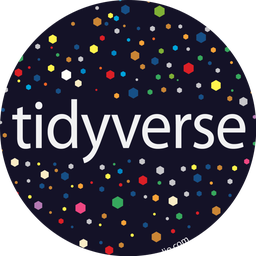
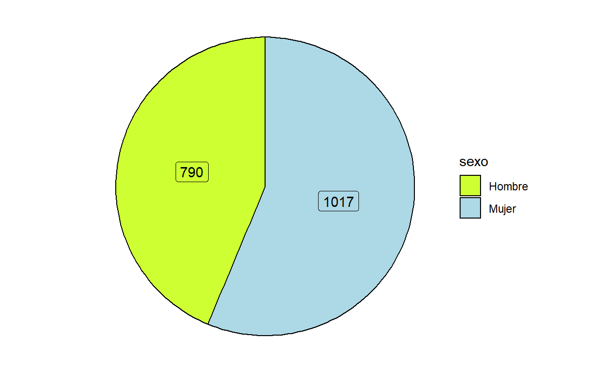
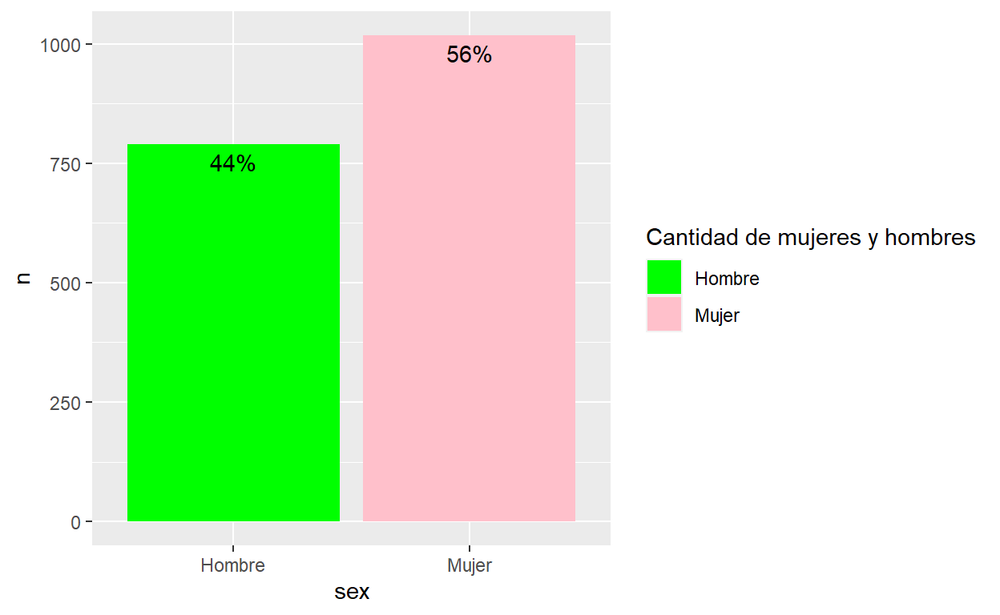
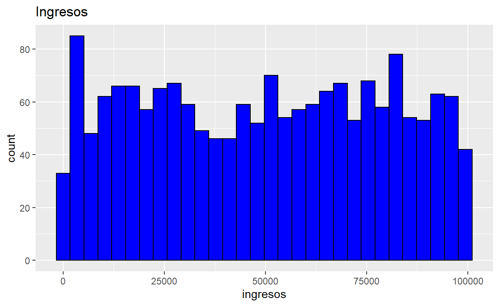
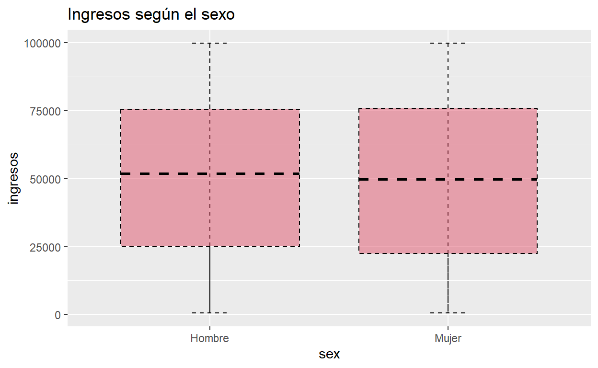
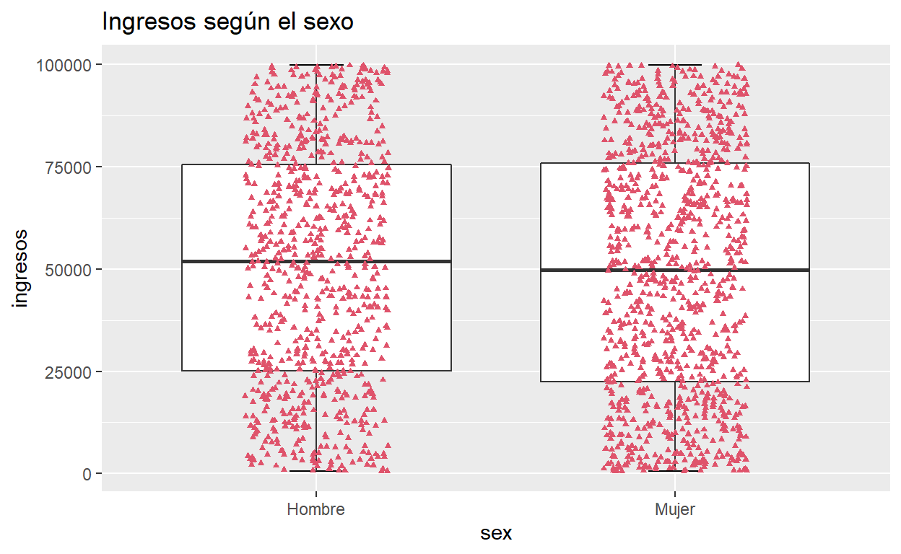
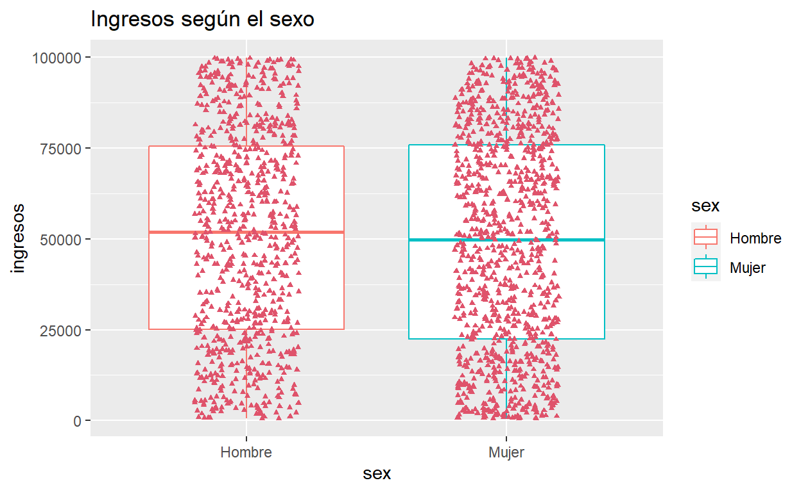

¿Que es un paquete? Un paquete es una colección de funciones y conjunto de datos desarrollados por la comunidad de R. Ayudan a mejorarla funcionalidad del programa, agilizar ciertas tareas y a agregar funciones nuevas.
¿Que es Tidyverse?
Tidyverse es una colección de paquetes de R diseñados para el Data Science. Es conocido porque es uno de los más populares gracias a las funciones muy útiles que provee para la manipulación de data ya que tiene paquetes para cada paso del tratamiento de data y es por ello que nos ayuda a trabajar las bases de datos. Ha sido desarrollo por RSutdio.
Es consistente: Todos los paquete tienen una misma estructura
Es Concatenable: Siempre se pueden unir pequeñas partes
Para importar datos tenemos readr, haven y readxl. Para limpiar los datos usamos tidyr, para transofrmar los datos se usa dplyr, que lo veremos a continuación, para modelar se usa purr o broom, para visualizar se usa ggplot2. Finalmente, para comunicar se usa knitr para publicar los resultados por html, pdf, ppt. y rmarkdown es la estructura de knitr.

¿Como se instala un paquete? Cuando instalas un paquete estas descargando una serie de funciones con un solo comando. Para instalar un paquete solo tienes que correr el siguiente comando con el nombre del paquete dentro del paréntesis entre comillas.
install.packages("tidyverse")
Por ejemplo::Puedes descargar solo el paquete “ggplot2” usando los comandos indicados anteriormente (“install.packages(”ggplot2”)). Sin embargo; si ya descargaste “tidyverse”, ya descargaste ggplot2 también.
Recuenden:Los comandos en R tienen que estar con los espacios, comas, comillas, paréntesis y puntos dexactamente de cierta forma , sino el comando no correrá! Es recomendable correr este comando en la consola porque solo se tiene que descargar un paquete una vez por lo cual si dejas el comando en tu script se podría volver a correr.
Abrir el paquete
Una vez instalado el paquete , ábrelo con el siguiente comando.
Esto se repite con todos los paquetes que quieras instalar y abrir. Puedes ya tener el paquete descargado pero si no lo abres con este comando, no podrás utilizar las funciones.Ya que tidyverse es un conjunto de paquetes, si lo abres estas abriendo todos los paquetes que este incluye. Otra opción es abrir solo el o los paquetes que necesitas usar ya que abrir el paquete de tidyverse a veces demora un poco debido a que son varios paquetes.
#Descargamos la Data
A continuación descargaremos la siguiente data para utilizar las principales funciones dentro de Tidyverse y las más útiles para nuestro trabajo en el Laboratorio.
Siempre es bueno ver la base de datos y analizar su estructura; con los siguientes comandos pueden hacerlo :
Ver la estructura de bases de datos, el tipo de variables :
str(usa)
Ver base de datos : View(usa)
Ver los nombres de las variables :
names(usa)
Nota:Para ver la Base de datos también puedes buscarla en tu environment y darle click.
##Principales Paquetes y funciones
#ggplot2
Este paquete sirve para crear gráficos basados en la data seleccionada. También se le puede indicar una serie de parámetros como el color y tipo de letra, los títulos de los gráficos y más características que se indican con los comando.
Grafico Pie :
Pasos previos:
1 Formateo la variable como categórica.
2Acuerdense de revisar en el diccionario de datos o en la misma base de datos,si es que posible verificarlo desde ahi, COMO esta formateada la variable.
Por ejemplo en este caso tendríamos que confirmar que representa 1 y que representa 2 pero en esta base de datos los niveles ya están etiquetados.
Factor w/ 2 levels "Hombre","Mujer": 2 2 2 2 1 1 2 2 2 2 ...levels(usa$sex)
[1] "Hombre" "Mujer" table(usa$sex)
Hombre Mujer
790 1017 4 Creamos un dataframe con la variable que usaremos para el gráfico, esto lo hacemos porque para los gráficos que haremos al principio, no necesitamos que se representen todas las observaciones como puntos sino que veremos más los porcentajes y la frecuencia de cada categoría de la variable. Hay varias formas de hacer lo mismo, esta es la que hemos elegido para esta capacitación para practicar las funciones del dplyr.
Ojo usamos %>% como un “conector” , es útil
pensarlo como un ” y luego”. También usamos las funciones de dyplr.
df<-usa %>% #creamos un dataframe llamado "df"
group_by(sex) %>% #Agrupamos los datos por la variable "sex"
count() %>% #Contamos la frecuencia de las categorias de sex, es decir, Hombre-Mujer en esta base de datos
ungroup() %>% #Desgrupamos la data para que no afecté el siguiente paso
mutate(pcnt = n / sum(n)) %>% #Usamos mutate para crear la variable pcnt en la cual vamos a dividir n(cantidad de observaciones en cada categoría)/ la suma total de observaciones de la muestra
arrange(pcnt) %>% #ordenamos la variable creada de menor a mayor
mutate(etiquetas = scales::percent(pcnt)) #creamos otra variable llamada etiqueta en donde generamos los porcentajes de cada categoria según la cantidad de observaciones en cada una.
Nota: En este Link encontramos todos los colores de R, sus codigos y nombres.
Creamos el gráfico
ggplot(df, aes(x = "", y = pcnt, fill = sex)) +
geom_col(color = "black") + #para los bordes
geom_label(aes(label = n), color = c("black", "black"),
position = position_stack(vjust = 0.5),
show.legend = FALSE) + #geom_label es para las etiquetas
guides(fill = guide_legend(title = "sexo")) + #para la leyenda y el título
scale_fill_manual(values = c("#CEFF33", "lightblue")) + #para ponerle color al grafico
coord_polar(theta = "y") + #para convertir la barra en circulo
theme_void() #el tema, este borra todo lo que esta alrededor del grafico, hay otros que lo ponen en un cuadrado o indican el centro exacto etc.

Generamos el mismo gráfico pero con porcentajes
Para ello ponemos la variable “etiquetas” que creamos al principio dentro del comando geom_label(que se encarga de las etiquetas). Con esto le estamos diciendo a R que ponga en las etiquetas el valor de la variable etiqueta en cada caso; es decir, el valor de la variable etiqueta en el caso de las mujeres y en el caso de los hombres. Debido a la formula de n/sum(n), nos dara el porcentaje de cantidad de mujeres y hombres.
ggplot(df, aes(x = "", y = pcnt, fill = sex)) +
geom_col(color = "black") +
geom_label(aes(label = etiquetas), color = c("black", "black"),
position = position_stack(vjust = 0.5),
show.legend = FALSE) +
guides(fill = guide_legend(title = "sexo")) +
scale_fill_manual(values = c("#CEFF33", "lightblue")) +
coord_polar(theta = "y") +
theme_void()
Grafico de Barras
Ahora usaremos la base de datos usa.
fill= sex
ggplot(usa, aes(x = sex, fill = sex)) + #fill=sex : le estamos diciendo a R que
# rellene las barras según el sexo y automaticamente el R asigna colores
geom_bar()
# geom_text(aes(label=n), vjust = 2, colour = "black")
Ahora vamos a especificarle a R que color queremos para cada barra
df1<-usa %>%
group_by(sex) %>%
count()
#Porcentaje
ggplot(df, aes(x = sex , y = n, fill = sex)) +
geom_col() +
scale_fill_manual(values=c("green", "pink")) +
guides(fill = guide_legend(title = "Cantidad de mujeres y hombres")) +
geom_text(aes(label = etiquetas), vjust = 1.5, colour = "black")

ggplot(df, aes(x = sex , y = n, fill = sex)) +
geom_col() +
scale_fill_manual(values=c("green", "pink")) +
guides(fill = guide_legend(title = "Cantidad de mujeres y hombres")) +
geom_text(aes(label = n), vjust = 1.5, colour = "black")
Histograma
Usamos la variable ingresos porque con este gráfico representamos las frecuencias por lo cual se usa para graficar variables númericas.
ggplot(usa,aes(x = ingresos)) +
geom_histogram(color = 1, fill = "blue") +
ggtitle("Ingresos")

Boxplot
Basico
ggplot(usa, aes(x = sex, y = ingresos)) +
stat_boxplot(geom = "errorbar",
width = 0.15,
linetype =2, #tipo de linea
color = 1) +
geom_boxplot(linetype = 2,
lwd = 0.5, #ancho de linea
fill = 2, #color de la caja
alpha = 0.5, #transparencia
color = 1, #color borde
outlier.colour =2) + #color atipicos
ggtitle ("Ingresos según el sexo")

Con puntos que representan las observaciones
ggplot(usa, aes(x = sex, y = ingresos)) +
stat_boxplot(geom = "errorbar",
width = 0.15) +
geom_boxplot(outlier.shape = NA) +
geom_jitter(width = 0.2,colour = 2, shape = 17, size = 1, ) +
ggtitle ("Ingresos según el sexo")

Con diferentes colores de cajas
ggplot(usa, aes(x = sex, y = ingresos,
colour = sex,
shape = sex)) +
geom_boxplot(outlier.shape = NA) +
geom_jitter(width = 0.2,colour = 2 , shape = 17, size = 1, ) +
ggtitle ("Ingresos según el sexo")

#dplyr
El paquete dplyr es el más útil en R para la manipulación de datos. Uno de los aportes mas grandes de dplyr es %>% (se genera mediante control shift M).
Filter : Filtrar las filas según un criterio específico. Es importante siempre acordarse que als filas son las observaciones y las columnas las variables.
Ejemplos :
Aca estamos filtrando de la data usa las observaciones (personas) que son judios y apoyan el aborto solo en caso de violación. Podemos ver en el resultado que hay 3 filas (rows) y 25 columnas (columns) lo que significa que hay 3 observaciones, en este caso personas, que cumplen con las dos caracteristicas seleccionadas. Las 25 columnas son las 25 variables de la base de datos que estamos usando y nos brindan la infromación de esos 3 casos que han sido filtrados.
filter(usa, relig=="Judio", aborto=="2. Solo caso de violacion")
id region consipol edad intecamp clintpre gorepre
1 137 3. Sur 5. Algo conservador 57 3. Poco 100 100
2 310 4. Oeste 5. Algo conservador 51 1. Mucho 5 60
3 1598 1. Noreste 6. Conservador 35 3. Poco 50 75
gbushpre aborto anonac
1 51 2. Solo caso de violacion 1949 o antes
2 60 2. Solo caso de violacion 1949 o antes
3 50 2. Solo caso de violacion 1950-1965
educ sexo ingresos marital voto96
1 3. Más que secundaria Hombre 28036 5. Solteros Votó
2 3. Más que secundaria Mujer 46714 1. Casado Votó
3 3. Más que secundaria Mujer 97014 1. Casado Votó
quien96 su_ecopas clintpst gorepst gbushpst relig voto00
1 1. Bill Clinton 2. Igual 50 50 50 Judio Votó
2 5. Ross Perot 2. Igual <NA> <NA> <NA> Judio <NA>
3 1. Bill Clinton 2. Igual 60 85 45 Judio Votó
confipol difclint sex
1 2. Media Baja -50 Hombre
2 <NA> NA Mujer
3 4. Alta 10 MujerEn el siguiente ejemplo se esta filtrando a todas las personas de la muestra tengan una edad mayorigual a 80 años que sean mujeres y que opinen que se deba permitir el aborto. R nos indica que hay 8 casos filtrados
filter(usa, sexo=="Mujer", aborto=="4. Permitir", edad>=80)
id region consipol edad intecamp clintpre
1 1646 2. Norte Centro 5. Algo conservador 93 3. Poco <NA>
2 1789 1. Noreste 3. Algo liberal 88 1. Mucho 100
3 1687 3. Sur 1. Muy liberal 88 1. Mucho 100
4 1083 2. Norte Centro 3. Algo liberal 82 5. Nada 100
5 838 3. Sur 3. Algo liberal 81 5. Nada 85
6 581 3. Sur 4. Moderado 80 1. Mucho 75
7 707 4. Oeste 5. Algo conservador 80 3. Poco 40
8 900 1. Noreste 7. Muy Conservador 80 3. Poco 0
gorepre gbushpre aborto anonac educ
1 <NA> <NA> 4. Permitir <NA> 3. Más que secundaria
2 100 0 4. Permitir 1949 o antes 3. Más que secundaria
3 100 <NA> 4. Permitir 1949 o antes 3. Más que secundaria
4 100 15 4. Permitir 1949 o antes 1. Menos que Secundaria
5 85 70 4. Permitir 1949 o antes 3. Más que secundaria
6 60 40 4. Permitir 1949 o antes 3. Más que secundaria
7 60 70 4. Permitir 1949 o antes 3. Más que secundaria
8 15 100 4. Permitir 1949 o antes 3. Más que secundaria
sexo ingresos marital voto96 quien96 su_ecopas
1 Mujer NA 2. Viudo Votó 3. Bob Dole 2. Igual
2 Mujer 44054 5. Solteros Votó 1. Bill Clinton 2. Igual
3 Mujer 92553 2. Viudo Votó 1. Bill Clinton 2. Igual
4 Mujer 89441 3. Divorciado No votó <NA> <NA>
5 Mujer 16029 4. Separado Votó 1. Bill Clinton 1. Mejor
6 Mujer 32838 2. Viudo Votó 1. Bill Clinton <NA>
7 Mujer 66983 2. Viudo Votó 5. Ross Perot <NA>
8 Mujer 59639 2. Viudo Votó 3. Bob Dole <NA>
clintpst gorepst gbushpst relig voto00 confipol difclint
1 <NA> <NA> <NA> Protestante Votó <NA> NA
2 100 100 <NA> Catolico Votó <NA> 0
3 <NA> <NA> <NA> Protestante <NA> <NA> NA
4 100 100 0 Protestante Votó 2. Media Baja 0
5 85 87 80 Protestante Votó 4. Alta 0
6 45 55 45 Protestante Votó 2. Media Baja -30
7 40 60 60 Protestante Votó 3. Media Alta 0
8 0 50 85 Protestante Votó 2. Media Baja 0
sex
1 Mujer
2 Mujer
3 Mujer
4 Mujer
5 Mujer
6 Mujer
7 Mujer
8 MujerPodemos incluir varias variables y filtrar la base de datos con todas las variables que queramos.
select: Este comando nos permite seleccionar un subconjunto de variables de la base de datos indicando sus nombres.
Ejemplo
Aca estamos seleccionando la variable intecamp y sexo de la base de datos usa y las estamos guardando en un un dataframe
Tambien podemos usar este comando para seleccionar todas las variables menos algunas.
Por ejemplo aca estamos selecionando todas las variables de la base de datos “usa” menos las variables “voto96” y “quien96”. Asimismo, guardamos esta selección de variables en un dataframe
id region consipol edad intecamp clintpre
1 1347 3. Sur <NA> 97 5. Nada 40
2 1226 3. Sur 4. Moderado 96 3. Poco 85
3 1300 2. Norte Centro 2. Liberal 95 5. Nada 100
4 1646 2. Norte Centro 5. Algo conservador 93 3. Poco <NA>
5 799 3. Sur 5. Algo conservador 93 1. Mucho 85
6 1328 4. Oeste <NA> 92 5. Nada 50
7 1412 3. Sur 5. Algo conservador 91 3. Poco 30
8 229 2. Norte Centro 6. Conservador 90 1. Mucho 50
9 1652 3. Sur 6. Conservador 90 1. Mucho 60
10 546 2. Norte Centro 5. Algo conservador 89 5. Nada <NA>
gorepre gbushpre aborto anonac
1 60 80 1. Nunca permitir 1949 o antes
2 85 70 2. Solo caso de violacion 1949 o antes
3 85 70 2. Solo caso de violacion 1949 o antes
4 <NA> <NA> 4. Permitir <NA>
5 60 90 4. Permitir 1949 o antes
6 50 50 2. Solo caso de violacion 1949 o antes
7 40 70 2. Solo caso de violacion 1949 o antes
8 60 60 1. Nunca permitir 1949 o antes
9 70 80 2. Solo caso de violacion 1949 o antes
10 <NA> <NA> 1. Nunca permitir 1949 o antes
educ sexo ingresos marital su_ecopas
1 1. Menos que Secundaria Mujer NA 1. Casado <NA>
2 1. Menos que Secundaria Mujer 36297 2. Viudo <NA>
3 1. Menos que Secundaria Mujer 3856 2. Viudo 1. Mejor
4 3. Más que secundaria Mujer NA 2. Viudo 2. Igual
5 1. Menos que Secundaria Hombre 83308 2. Viudo 2. Igual
6 1. Menos que Secundaria Hombre 32926 1. Casado 1. Mejor
7 2. Secundaria Completa Mujer 36207 2. Viudo 2. Igual
8 3. Más que secundaria Mujer 82888 2. Viudo <NA>
9 3. Más que secundaria Mujer 66595 2. Viudo <NA>
10 1. Menos que Secundaria Mujer 95586 2. Viudo 3. Peor
clintpst gorepst gbushpst relig voto00 confipol
1 <NA> <NA> <NA> Otro <NA> <NA>
2 50 50 50 Protestante NO votó <NA>
3 <NA> <NA> <NA> Protestante <NA> <NA>
4 <NA> <NA> <NA> Protestante Votó <NA>
5 30 40 100 Protestante Votó 1. Baja
6 20 50 65 Protestante Votó 2. Media Baja
7 <NA> <NA> <NA> Protestante <NA> <NA>
8 80 50 <NA> Protestante Votó 2. Media Baja
9 80 75 90 Protestante NO votó 4. Alta
10 <NA> 40 <NA> Catolico NO votó 2. Media Baja
difclint sex
1 NA Mujer
2 -35 Mujer
3 NA Mujer
4 NA Mujer
5 -55 Hombre
6 -30 Hombre
7 NA Mujer
8 30 Mujer
9 20 Mujer
10 NA MujerSi van a environment pueden ver todos los datasets, objetos etc que han creado
summarise Este comando te permite crear resúmenes de grupos de datos según variables,funciones, medidas de tendencia central, etc.
Ejemplo : En este comando le estamos indicando a R que cree una variable llamada “promgorepost” y que dentro de ella se encuentre el promedio de los valores de la variable “gorepst”. En este caso el comando summarise esta resumiendo todos los datos de la variable gorepst y esta calculando el promedio de estos y también esta creando una variable con los datos resumidos.
usa$gorepst<- as.numeric(usa$gorepst)
usa$gorepre<- as.numeric(usa$gorepre)
summarise(usa, promgorepost = mean(gorepst, na.rm = T))
promgorepost
1 21.76172Otro ejemplo:
group_by: Este comando nso sirve para agrupar datos. Agrupa diferentes observaciones de manera que la base de datos original no cambie.
Ejemplo: Aca le estamos indicando a R que agrupe la data en base a posición política de los encuestados, además usaremos summarise para sacar el promedio de la aprobación de Bush post gestión.
usa$gbushpst=as.numeric(usa$gbushpst)
usa.g <- usa%>%
group_by(., consipol) %>%
summarise(mean = mean(gbushpst,na.rm=TRUE), n = n()) %>% head(10)
usa.g
# A tibble: 8 × 3
consipol mean n
<fct> <dbl> <int>
1 1. Muy liberal 11.8 82
2 2. Liberal 15.3 158
3 3. Algo liberal 17.7 351
4 4. Moderado 20.1 109
5 5. Algo conservador 22.2 528
6 6. Conservador 25.8 250
7 7. Muy Conservador 29.1 145
8 <NA> 18.7 184count: Con este comando podemos contar los casos en base a una variable.
Ejemplo: Le estamos indicando al R que cuente los casos de las personas de acuerdo al nivel educativo
count(usa, educ, sort = F)%>% head(10) #con SORT=F estamos diciendo que nos ordene los datos de manera descendente
educ n
1 1. Menos que Secundaria 180
2 2. Secundaria Completa 519
3 3. Más que secundaria 1101
4 <NA> 7En este ejemplo le estamos pidiendo a R que agrupe las observaciones de la base de datos “usa” según la variable “consipol” y luego que cuente según el nivel educativo de forma ascendente.
# A tibble: 10 × 3
# Groups: consipol [3]
consipol educ n
<fct> <fct> <int>
1 1. Muy liberal 1. Menos que Secundaria 4
2 1. Muy liberal 2. Secundaria Completa 16
3 1. Muy liberal 3. Más que secundaria 62
4 2. Liberal 1. Menos que Secundaria 10
5 2. Liberal 2. Secundaria Completa 37
6 2. Liberal 3. Más que secundaria 111
7 3. Algo liberal 1. Menos que Secundaria 25
8 3. Algo liberal 2. Secundaria Completa 100
9 3. Algo liberal 3. Más que secundaria 225
10 3. Algo liberal <NA> 1mutate : Este comando te permite crear una nueva variable conservando las ya existentes.
arrange: Con este comando podemos ordenar los valores de una variable de forma ascendente o descendente.
Ejemplo : En este comando le estamos indicando a R que queremos crear un data frame y que agreguemos a este la variable difgore la cual es la diferencia de las variables “gorepst” y “gorepre”. Luego le estamos pidiendo que ordene a la variable gorepst de forma descendente y luego le estamos pidiendo que seleccione las variables “id”, “difgore”, “gorepre”, “gorepst” para mostrar los resultados.
De manera ascendente
Transmute : Este comando es muy parecido al anterior. La diferencia es que muestra únicamente la nueva variable creada (no se agrega a la base de datos).
Ejemplos: Le estamos indicando a R que cree un dataframe llamado “usabush” y que cree una variable llamada “difbush” que sera la diferencia entre la variable “gbushpst” y “gbushppre”. Luego que ordene los valores de esta variable de forma descendente.
usa$gbushpst<- as.numeric(usa$gbushpst)
usa$gbushpre<- as.numeric(usa$gbushpre)
usabush=transmute(usa, difbush = gbushpst - gbushpre) %>%
arrange(., desc(difbush))
#View(usabush)
merge : Este comando nos eprmite juntar datasets
left_join() : Combinar dos datasets y quedarse con las
observaciones de la data de origen. (Tiene # porque al correr el comando
, aparece toda la data en la pagina y toma mucho espacio, usetdes
copienlo sin el #)
id difgore.x gorepre.x gorepst.x difgore.y gorepre.y gorepst.y
1 1489 -45 46 1 -45 46 1
2 191 -36 42 6 -36 42 6
3 37 -34 35 1 -34 35 1
4 25 -32 33 1 -32 33 1
5 71 -32 51 19 -32 51 19
6 137 -32 51 19 -32 51 19
7 387 -32 33 1 -32 33 1
8 847 -32 51 19 -32 51 19
9 1755 -32 33 1 -32 33 1
10 785 -32 42 10 -32 42 10right_join() : Combinar dos datasets y quedarse con las
observaciones de destino
right_join(usagoreasc, usa, by = 'id')%>% head(10)
id difgore gorepre.x gorepst.x region
1 1489 -45 46 1 4. Oeste
2 191 -36 42 6 1. Noreste
3 37 -34 35 1 3. Sur
4 25 -32 33 1 4. Oeste
5 71 -32 51 19 3. Sur
6 137 -32 51 19 3. Sur
7 387 -32 33 1 3. Sur
8 847 -32 51 19 2. Norte Centro
9 1755 -32 33 1 1. Noreste
10 785 -32 42 10 1. Noreste
consipol edad intecamp clintpre gorepre.y gbushpre
1 2. Liberal 23 1. Mucho 90 46 1
2 5. Algo conservador 53 3. Poco 75 42 19
3 5. Algo conservador 76 3. Poco 50 35 43
4 7. Muy Conservador 63 3. Poco 50 33 11
5 3. Algo liberal 58 3. Poco 75 51 19
6 5. Algo conservador 57 3. Poco 100 51 20
7 3. Algo liberal 47 1. Mucho 85 33 43
8 5. Algo conservador 45 3. Poco 100 51 43
9 4. Moderado 42 3. Poco 85 33 19
10 5. Algo conservador 40 5. Nada 85 42 19
aborto anonac educ
1 4. Permitir Despues de 1965 2. Secundaria Completa
2 4. Permitir 1949 o antes 3. Más que secundaria
3 4. Permitir 1949 o antes 3. Más que secundaria
4 2. Solo caso de violacion 1949 o antes 3. Más que secundaria
5 2. Solo caso de violacion 1949 o antes 3. Más que secundaria
6 2. Solo caso de violacion 1949 o antes 3. Más que secundaria
7 4. Permitir 1950-1965 1. Menos que Secundaria
8 3. Solo en Caso de Salud 1950-1965 1. Menos que Secundaria
9 3. Solo en Caso de Salud 1950-1965 2. Secundaria Completa
10 4. Permitir 1950-1965 2. Secundaria Completa
sexo ingresos marital voto96 quien96 su_ecopas
1 Hombre 29191 5. Solteros No votó <NA> 2. Igual
2 Hombre 2006 1. Casado Votó 1. Bill Clinton 2. Igual
3 Mujer 22519 2. Viudo No votó <NA> 3. Peor
4 Mujer 8013 5. Solteros Votó <NA> 2. Igual
5 Mujer 74038 1. Casado Votó 1. Bill Clinton 2. Igual
6 Hombre 28036 5. Solteros Votó 1. Bill Clinton 2. Igual
7 Hombre 86838 1. Casado No votó <NA> 1. Mejor
8 Mujer 90926 <NA> No votó <NA> <NA>
9 Mujer 5259 1. Casado Votó 1. Bill Clinton <NA>
10 Hombre 30262 5. Solteros Votó 5. Ross Perot <NA>
clintpst gorepst.y gbushpst relig voto00 confipol
1 80 1 1 <NA> Votó 2. Media Baja
2 75 6 10 Protestante Votó 2. Media Baja
3 50 1 38 Protestante NO votó 3. Media Alta
4 0 1 30 Otro Votó 2. Media Baja
5 50 19 10 Protestante Votó 4. Alta
6 50 19 18 Judio Votó 2. Media Baja
7 50 1 38 Otro Votó 2. Media Baja
8 100 19 8 Protestante NO votó 2. Media Baja
9 70 1 38 Catolico Votó 4. Alta
10 0 10 23 Catolico Votó 1. Baja
difclint sex
1 -10 Hombre
2 0 Hombre
3 0 Mujer
4 -50 Mujer
5 -25 Mujer
6 -50 Hombre
7 -35 Hombre
8 0 Mujer
9 -15 Mujer
10 -85 Hombrey la misma dinámica con los siguientes comandos:
inner_join() : Combinar dos datasets y excluir todas las
columnas(variables) que no coinciden.
full_join() : Combinar dos datasets y quedarse con todas
las observaciones, de ambos datasets.
tidyr
Este paquete tiene como función crear “Tidy data”.
¿Que es “Tidy data”? Tidy data es aquella data en donde cada columna es una variable, cada fila es una observación y cada celda es un solo valor.
Este paquete fue creado para tener a tu data organizada y limpia y así poder analizarla de la mejor forma usando todas las otras herramientas.
gather() : Este comando te permite emparejar los valores
de dos variables en pares.
Para este ejercicio usaremos una base que esta en el mismo R. El mismo programa tiene una serie de paquetes y bases de datos que vienen con el mismo programa.
spread() : Este comando te permite volver al estado
anterior.
Para este ejercicio vamos vamos a crear una columna identificadora
que se denomina car y que tiene los nombres de las filas.
Esto lo hacemos para después revertirlo con el comando spread
mtcars2 <- mtcars
mtcars2$car <- rownames(mtcars2)
#mtcars2
Ahora con la función “gather” emparejamos los valores de las variables atributo y valor y qui
car atributo valor
1 Mazda RX4 mpg 21.0
2 Mazda RX4 Wag mpg 21.0
3 Datsun 710 mpg 22.8
4 Hornet 4 Drive mpg 21.4
5 Hornet Sportabout mpg 18.7
6 Valiant mpg 18.1
7 Duster 360 mpg 14.3
8 Merc 240D mpg 24.4
9 Merc 230 mpg 22.8
10 Merc 280 mpg 19.2y ahora sí podemos revertirlo (gracias a que hay una columna de identificadores denomiada car)
car mpg
1 Datsun 710 22.8
2 Duster 360 14.3
3 Hornet 4 Drive 21.4
4 Hornet Sportabout 18.7
5 Mazda RX4 21.0
6 Mazda RX4 Wag 21.0Separate() : Convierte una única columna en múltiples
separando los caracteres que componen a la inicial
Descargamos esta base de datos para el ejercicio. Lo que queremos lograr es separar la variable location en “lat” y “long”
Busquen la variable en la base de datos apra que vean como esta codificada.
df3 <- read.table("http://gauss.inf.um.es/datos/longlat.txt", sep=";", head=T)%>% head(10)
df3
Date Time Accident.Type Location
1 07/01/2012 1630 PD (39.26699, -76.560642)
2 07/02/2012 1229 PD (39.000549, -76.399312)
3 07/02/2012 1229 PD (39.00058, -76.399267)
4 07/02/2012 445 PI (39.26367, -76.56648)
5 07/02/2012 802 PD (39.240862, -76.599017)
6 07/02/2012 832 PD (39.27022, -76.63926)Le quitamos los parentesis a nuestra variable de interes que es Location
Date Time Accident.Type Location
1 07/01/2012 1630 PD 39.26699, -76.560642
2 07/02/2012 1229 PD 39.000549, -76.399312
3 07/02/2012 1229 PD 39.00058, -76.399267
4 07/02/2012 445 PI 39.26367, -76.56648
5 07/02/2012 802 PD 39.240862, -76.599017
6 07/02/2012 832 PD 39.27022, -76.63926 Date Time Accident.Type lat long
1 07/01/2012 1630 PD 39.26699 -76.560642
2 07/02/2012 1229 PD 39.000549 -76.399312
3 07/02/2012 1229 PD 39.00058 -76.399267
4 07/02/2012 445 PI 39.26367 -76.56648
5 07/02/2012 802 PD 39.240862 -76.599017
6 07/02/2012 832 PD 39.27022 -76.63926unite() : unir dos variables en una
id region consipol edad intecamp clintpre
1 1347 3. Sur <NA> 97 5. Nada 40
2 1226 3. Sur 4. Moderado 96 3. Poco 85
3 1300 2. Norte Centro 2. Liberal 95 5. Nada 100
4 1646 2. Norte Centro 5. Algo conservador 93 3. Poco <NA>
5 799 3. Sur 5. Algo conservador 93 1. Mucho 85
gorepre gbushpre aborto anonac
1 29 35 1. Nunca permitir 1949 o antes
2 42 30 2. Solo caso de violacion 1949 o antes
3 42 30 2. Solo caso de violacion 1949 o antes
4 NA NA 4. Permitir <NA>
5 29 37 4. Permitir 1949 o antes
educ nueva_variable ingresos voto96
1 1. Menos que Secundaria Mujer_1. Casado NA No votó
2 1. Menos que Secundaria Mujer_2. Viudo 36297 <NA>
3 1. Menos que Secundaria Mujer_2. Viudo 3856 Votó
4 3. Más que secundaria Mujer_2. Viudo NA Votó
5 1. Menos que Secundaria Hombre_2. Viudo 83308 Votó
quien96 su_ecopas clintpst gorepst gbushpst relig
1 <NA> <NA> <NA> NA NA Otro
2 <NA> <NA> 50 19 18 Protestante
3 1. Bill Clinton 1. Mejor <NA> NA NA Protestante
4 3. Bob Dole 2. Igual <NA> NA NA Protestante
5 5. Ross Perot 2. Igual 30 15 38 Protestante
voto00 confipol difclint sex
1 <NA> <NA> NA Mujer
2 NO votó <NA> -35 Mujer
3 <NA> <NA> NA Mujer
4 Votó <NA> NA Mujer
5 Votó 1. Baja -55 Hombre